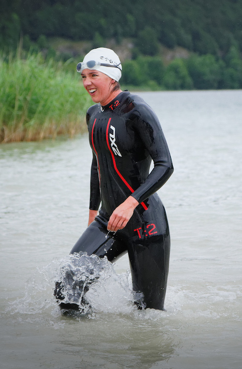

Sophie Redford
Detector physicist and outdoor sports enthusiast, currently working on photon detectors at PSI
Contact me:
email: sophie.redford 'at' psi.ch
phone: +41 56 310 2171
office: OFLC/002

Profile
PSI postdoc developing the charge integrating JUNGFRAU hybrid pixel detector for photon science
- detector characterisation: measuring noise, linearity, stability, response
- detector calibration: developing, carrying out and evaluating calibration on over 150 detector modules
- detector operation: ensuring successful detector performance in multi-disciplinary proof-of-principle photon science experiments
Previously
CERN applied fellow working on detectors for CLIC
- vertex detector R&D: calibration and testbeam analysis of thin sensor assemblies
- physics potential of the top Yukawa coupling measurement at a 1.4 TeV Compact Linear Collider
- wrote "CERN through the eyes of a young scientist" published in Quantum Diaries
STFC funded postgraduate student at the University of Oxford
- link to my DPhil thesis on CDS
Member of the LHCb experiment at CERN
- first observation of the rare decay B+ → π+ μ+ μ-
- charge asymmetry in B+ → ψ π+ decays
- measuring luminosity with beam parameters
- measuring the LHCb vertex resolution
- VELO shifter for LHC first physics
Advisor at the Parliamentary Office of Science and Technology
- briefing on Open Source and Open Standards PDF
Master's student at the University of Manchester
- forward backward charge asymmetry of Z0 → μ+ μ- with the DØ detector
Reports & Publications
- CLIC brochure CERN-Brochure-2015-006-Eng
- Test beam analysis of ultra-thin hybrid pixel detector assemblies with Timepix readout ASICs CLICdp-Note-2016-001
- Calibration of ultra-thin hybrid pixel detector assemblies with Timepix readout ASICs CLICdp-Note-2015-003
- Study of the effect of additional background channels on the top Yukawa coupling measurement at a 1.4 TeV CLIC CLICdp-Note-2015-001
- Physics potential of the top Yukawa coupling measurement at a 1.4 TeV Compact Linear Collider using the CLIC SiD detector CLICdp-Note-2014-001
- Analysis of bias voltage scan data recorded with hybrid Timepix1 silicon pixel assemblies at the DESY testbeam LCD-OPEN-2014-001
- Physics at the CLIC e+e- Linear Collider - Input to the Snowmass process 2013 arxiv
- Snowmass 2013 Top quark working group report arxiv
- Performance of the LHCb Vertex Locator arxiv
- First observation of the decay B+ → π+ μ+ μ- arxiv
- Measurements of the branching fractions and CP asymmetries of B+ → J/ψ π+ and B+ → ψ(2S) π+ decays arxiv
- Radiation damage in the LHCb Vertex Locator arxiv
- Prompt K0S production in pp collisions at √s = 0.9 TeV arxiv
- Absolute luminosity measurements with the LHCb detector at the LHC arxiv
- Optimisation of variables for studying dilepton transverse momentum distributions at hadron colliders arxiv
Conferences & Proceedings
- 2015 Jul 22-29 EPS HEP, Vienna Austria, "Higgs and BSM Physics at CLIC" Slides Proceedings
- 2015 Jan 8-10 Epiphany, Cracow Poland, "Physics at CLIC" Slides Proceedings
- 2014 Sep 15-19 VERTEX, Macha Lake Czech Republic, "R&D for the Vertexing at CLIC" Slides Proceedings
- 2014 Feb 28-Mar 1 INSTR, Novosibirsk Russia, "CLIC vertex detector R&D" Slides Proceedings
- 2010 Jul 15-20 Rencontres de Blois, Blois France, "Luminosity Measurement and K-short Production with First LHCb Data" Slides Proceedings
- 2010 Jun 6-11 VERTEX, Loch Lomond Scotland, "LHCb VELO Closing Control, Beam Reconstruction, and Luminosity from Vertex Reconstruction" Slides Proceedings
Side projects
Some extra things I did for fun:
{kind=link}